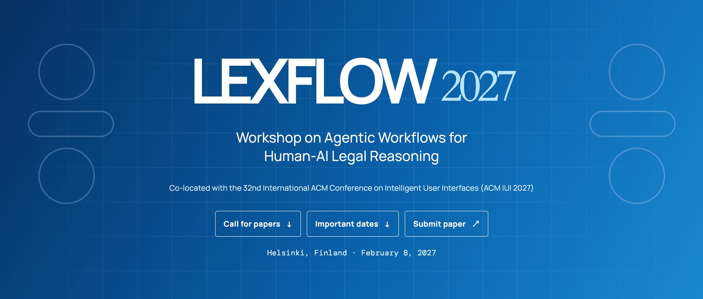

A one-day workshop at ACM IUI 2027 in Helsinki invites research, short and demo papers on interfaces for agentic legal reasoning. Submission deadline: 9 November 2026, 23:59 AoE.

8 February 2027 · Helsinki, Finland · Co-located with the 32nd ACM Conference on Intelligent User Interfaces
The workshop studies interfaces for multi-step, multi-agent legal workflows in research, drafting, compliance and fact verification. It asks how task decomposition, evidence, intermediate decisions, uncertainty and human intervention can become visible, steerable, verifiable and accountable.
Submission Types
Research Papers (10+ pages): mature empirical studies, systems, evaluation, theory or methods. Short Papers (5–9 pages): positions, early research and design explorations. Demo Papers (5–9 pages): interactive systems, prototypes and tools.
Key Dates
Submission: 9 November 2026, 23:59 AoE (UTC−12). Notification: 7 December 2026. Camera-ready: 21 December 2026. Workshop: 8 February 2027.
Topics
Agentic legal reasoning; human–AI collaboration; intelligent interfaces; process oversight; inspectable reasoning; steering and intervention; evidence provenance; uncertainty communication; contestability and correction; accountability; multi-agent coordination; task decomposition; evaluation and reusable design patterns.
Organisers
HKUST: Sirui Han, Yuyao Zhang, Yidan Huang, Chuxue Cao, Yujin Zhou and Guoying Lu.
Call for papers and submissionyzhang075@connect.ust.hkAll events